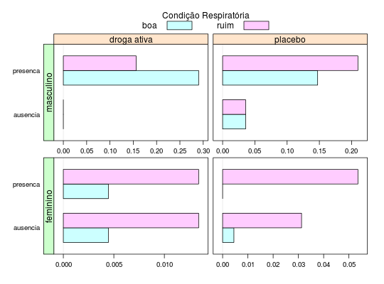

Estudo discutido em Myers, Montgomery e Vining (2002) que envolve a comparação de dois tratamentos aplicados em pacientes com problemas respiratórios. Nesse estudo foi considerado um total de 56 pacientes, sendo que 27 receberam o tratamento com uma droga ativa e 29 receberam placebo. Cada paciente foi observado em quatro ocasiões em que foi medida a condição respiratória. Foram também registrados o sexo e a idade de cada paciente além da pré-existência de um nível base.
Um data.frame com 224 observações e 6 variáveis.
pacitratsexoidadenivelcondPAULA (2004), Exemplo 5.5.2, pág. 385.
Myers, R.H.; Montgomery, D. C.; Vining, G. G. (2002). Generalized Linear Models: With Applications in Engineering and the Sciences. John Wiley, New York. Seção 6.5.
data(PaulaEg5.5.2)#> Warning: data set ‘PaulaEg5.5.2’ not foundstr(PaulaEg5.5.2)#> 'data.frame': 224 obs. of 6 variables: #> $ paci : Factor w/ 56 levels "1","2","3","4",..: 1 1 1 1 2 2 2 2 3 3 ... #> $ trat : Factor w/ 2 levels "droga ativa",..: 2 2 2 2 2 2 2 2 1 1 ... #> $ sexo : Factor w/ 2 levels "feminino","masculino": 2 2 2 2 2 2 2 2 2 2 ... #> $ idade: int 46 46 46 46 28 28 28 28 23 23 ... #> $ nivel: Factor w/ 2 levels "ausencia","presenca": 2 2 2 2 2 2 2 2 2 2 ... #> $ cond : Factor w/ 2 levels "boa","ruim": 2 2 2 2 1 1 1 1 2 1 ...library(latticeExtra) tb <- with(PaulaEg5.5.2, table(nivel, trat, sexo, cond)) ftable(tb)#> cond boa ruim #> nivel trat sexo #> ausencia droga ativa feminino 1 3 #> masculino 0 0 #> placebo feminino 1 7 #> masculino 8 8 #> presenca droga ativa feminino 1 3 #> masculino 65 35 #> placebo feminino 0 12 #> masculino 33 47ftable(prop.table(tb))#> cond boa ruim #> nivel trat sexo #> ausencia droga ativa feminino 0.004464286 0.013392857 #> masculino 0.000000000 0.000000000 #> placebo feminino 0.004464286 0.031250000 #> masculino 0.035714286 0.035714286 #> presenca droga ativa feminino 0.004464286 0.013392857 #> masculino 0.290178571 0.156250000 #> placebo feminino 0.000000000 0.053571429 #> masculino 0.147321429 0.209821429useOuterStrips( barchart(prop.table(tb), stack = FALSE, xlab = "", scales = list(x = list(relation = "free")), between = list(x = 0.5), auto.key = list( title = "Condição Respiratória", columns = 2, cex.title = 1) ) )